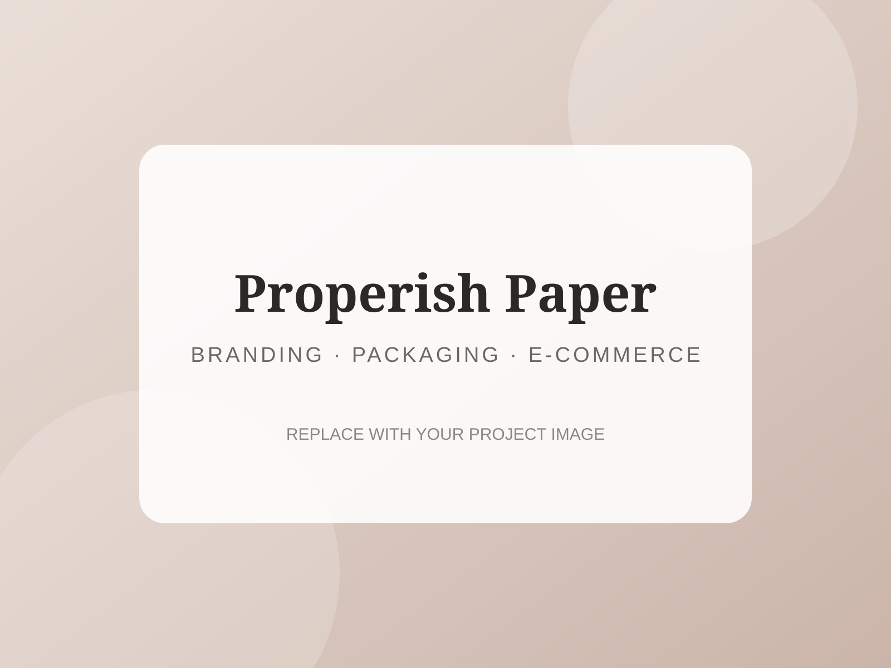
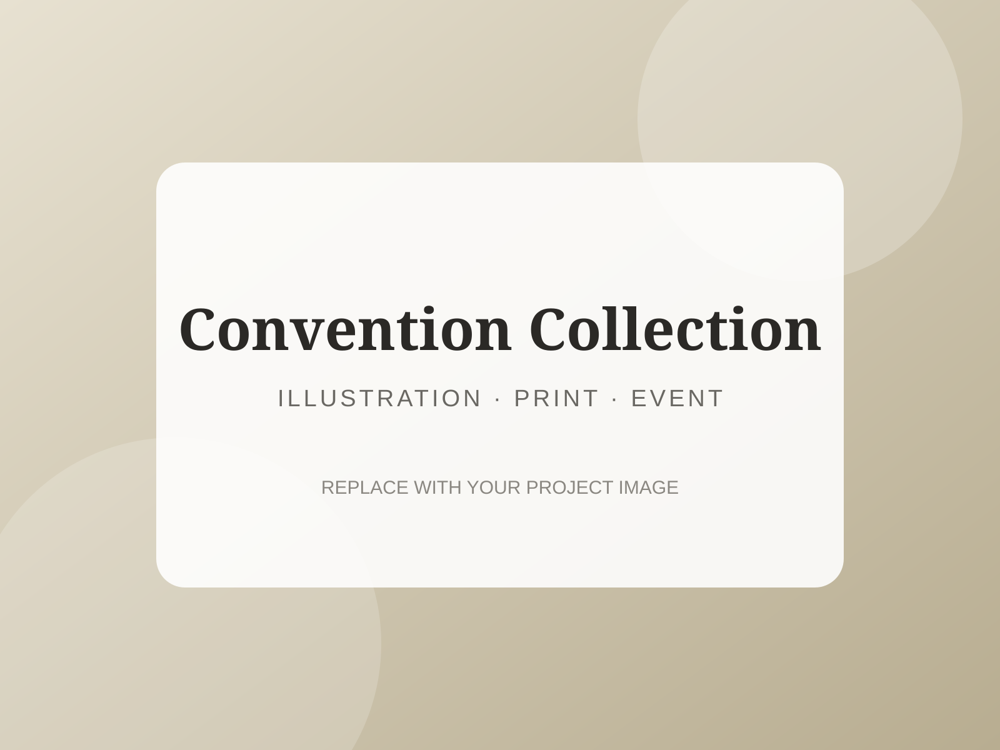
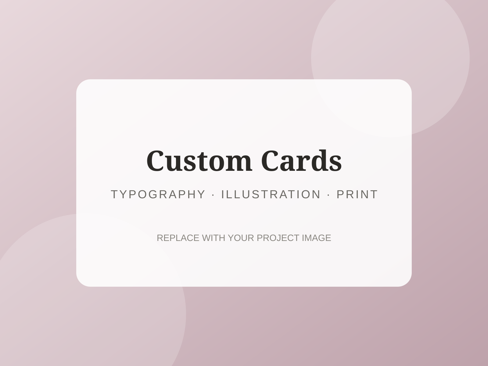
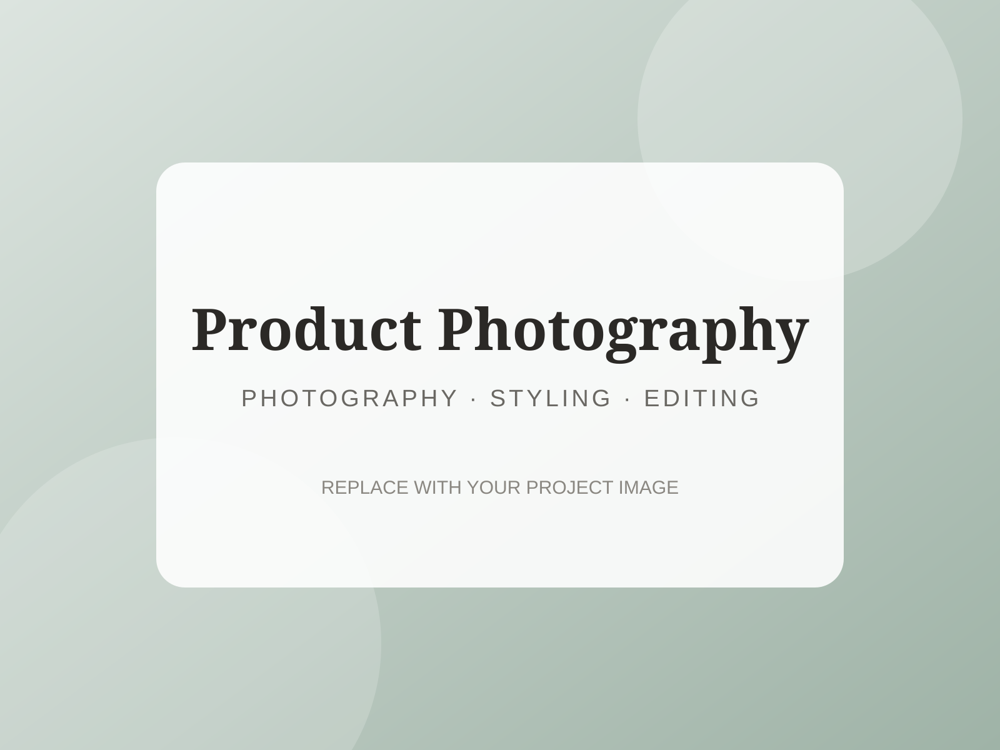

Branding · Packaging · E-commerce
Properish Paper
A visual identity and product collection developed for my stationery business, including greeting cards, packaging, shop graphics, and product presentation.
Graphic Designer · Illustrator · Visual Content Creator
I create original print and digital designs, custom paper goods, branding, product photography, and visual content from concept through final production.
Selected work
Replace these sample images and descriptions with your own strongest work.

Branding · Packaging · E-commerce
A visual identity and product collection developed for my stationery business, including greeting cards, packaging, shop graphics, and product presentation.

Illustration · Print · Event materials
A coordinated set of hand-fan cards, pin backings, signage, and keepsakes designed for clear communication and efficient small-batch production.

Typography · Illustration · Print
Personalized card designs created from client messages and occasions, combining original concepts, thoughtful copy, illustration, and layout.

Photography · Styling · Editing
Styled and edited product images created for online listings, marketing, and social media with attention to lighting, composition, and brand consistency.
About me
I’m a graphic designer, photographer, and small-business owner based in Tujunga, California. Through Properish Paper, I create original greeting cards, illustrations, packaging, promotional materials, and custom designs.
I enjoy turning personal ideas into polished visual pieces that feel approachable, memorable, and genuinely useful. My experience includes concept development, typography, layout, illustration, print preparation, product photography, client collaboration, and final production.
Affinity creative software · Canva · Silhouette Studio · Print production · Product photography · Visual branding
Contact